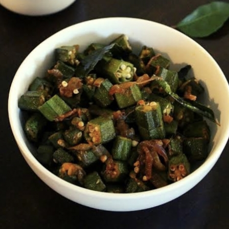

Telugu Ruchulu
తెలుగు రుచులు
ladiesFinger /
బెండకాయ
Home Page
Click to change the language
తెలుగు కోసం క్లిక్ చేయండి
Ingredients:
250g ladies finger (okra), washed & chopped
2 tbsp oil
½ tsp mustard seeds (optional)
½ tsp turmeric powder
1 tsp red chili powder (adjust to taste)
½ tsp cumin powder (optional)
Salt to taste
Curry leaves or coriander leaves (for garnish, optional)

Instructions:
Heat oil in a pan on medium heat. Add mustard seeds (if using) and let them splutter.
Add chopped ladies finger and sauté for 3-4 minutes without covering the pan.
Add turmeric, chili powder, cumin powder, and salt. Stir well to coat the okra evenly.
4. Cook on low-medium heat for 10-12 minutes, stirring occasionally, until the okra becomes crispy and non-sticky.
Garnish with curry leaves or coriander and serve hot!
Tip
కావలసినవిః
250గ్రాబెండకాయ కడిగి, తరిగినవి
2 టేబుల్ స్పూన్లు నూనె ½
½ స్పూన్ ఆవాలు
½ స్పూన్ పసుపు పొడి
1 స్పూన్ ఎర్ర మిరప పొడి
½ స్పూన్ జీలకర్ర పొడి
రుచికి ఉప్పు
కరివేపాకు లేదా కొత్తిమీర ఆకులు
మీడియం వేడి మీద పాన్ లో నూనె వేడి చేయండి. ఆవాలు వేసి (ఉపయోగిస్తే) మరియు వాటిని చిందరవందరగా ఉంచండి
తరిగిన బెండకాయ వేసి, పాన్ కవర్ చేయకుండా 3-4 నిమిషాలు వేయించాలి
పసుపు, కారం, జీలకర్ర, ఉప్పు వేసి కలపాలి.
ఓక్రా క్రిస్పీగా మరియు జిగటగా మారే వరకు, అప్పుడప్పుడు కదిలిస్తూ 10-12 నిమిషాలు తక్కువ-మీడియం వేడి మీద ఉడికించాలి.
కరివేపాకు లేదా కొత్తిమీరతో గార్నిష్ చేసి వేడిగా సర్వ్ చేయండి!
చిట్కా